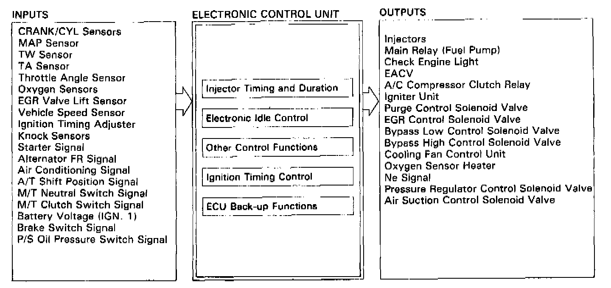

Description of On-Board Diagnostics

Input/Output
Injector Timing and Duration
- The ECU contains memories for the basic discharge durations at various engine speeds and manifold pressures. The basic discharge duration, after being read out from the memory, is further modified by signals sent from various sensors to obtain the final discharge duration.
Electronic Idle Control
Electronic Air Control Valve (EACV)
- When the engine is cold, the A/C compressor is on, the transmission is in gear (A/T only), power steering oil pressure is high or the alternator is charging, the ECU controls current to the EACV to maintain correct idle speed.
Ignition Timing Control
- The ECU contains memories for basic ignition timing at various engine speeds and manifold pressures. Ignition timing is also adjusted for coolant temperature.
Other Control Functions
1. Starting Control
- When the engine is started, the ECU provides a rich mixture.
2. Fuel Pump Control
- When the ignition switch is initially turned on, the ECU supplies ground to the main relay which supplies current to the fuel pump for 2 seconds to pressurize the fuel system.
- When the engine is running the ECU supplies ground to the main relay which supplies current to the fuel pump.
- When the engine is not running and the ignition is on, the ECU cuts ground to the main relay which cuts current to the fuel pump.
3. Fuel Cut-off Control
- During deceleration with the throttle valve closed, current to the injectors is cut-off to improve fuel economy at speeds over: M/T-1,050 rpm; A/T-1,O00 rpm.
- Fuel cut-off action also takes place when engine speed exceeds 6,600 rpm regardless of the position of the throttle valve to protect engine from over-running.
4. A/C Compressor Clutch Relay
- When the ECU receives a demand for cooling from the air conditioning system (radiator fan control unit), it delays the compressor from being energized, and enriches the mixture to assure smooth transition to the A/C mode.
5. Purge Control Solenoid Valve
- When the coolant temperature is below 70°C (158°F), the ECU supplies a ground to the purge control solenoid valve which cuts vacuum to the purge control valve.
6. Bypass Low Control Solenoid Valve (BLCSV), Bypass High Control Solenoid Valve (BHCSV)
- When engine speed is below 3,100 rpm, BHCSV and BLCSV are activated by a signal from the ECU. Intake air flows through a long chamber path, increasing torque at low RPM.
- When engine speed is 3,200-3,800 rpm, BLCSV is deactivated by the ECU. Intake air flows through a short chamber path, increasing mid-range torque.
- When the engine rpm is above 3,900 rpm, BLCSV and BHCSV are deactivated by the ECU. This creates a very short intake path and increases high-speed torque.
7. EGR Control Solenoid Valve (EGR CSV)
- When the EGR is required for control of oxides of nitrogen (NOx) emissions, the ECU supplies ground to the EGRCSV which supplies regulated vacuum to the EGR valve.
8. Pressure Regulator Control Solenoid Valve (PRCSV)
- At engine start if the coolant temperature is above 105°C (221 °F) or the intake air temperature is above 89°C (192.2°F), the PRCSV is energized, cutting manifold vacuum to the fuel pressure regulator for about 80 seconds.
9. Air Suction Control Solenoid Valve (ASCSV)
- During deceleration with the throttle valve closed, the ECU energizes the ASCSV which supplies vacuum to the air suction valve.
ECU Back-up Functions
1. Fail-Safe Function
- When an abnormality occurs in a signal from a sensor, the ECU ignores that signal and assumes a pre-programmed value that allows the engine to continue to run.
2. Back-up Function
- When an abnormality occurs in the ECU itself, the injectors are controlled by a back-up circuit independent of the system in order to permit minimal driving.
3. Self-diagnosis Function (Check Engine light)
- When an abnormality occurs in a signal from a sensor, the ECU lights the Check Engine light and stores the failure code in erasable memory. When the ignition is initially turned on, the ECU supplies ground for the Check Engine light for two seconds.